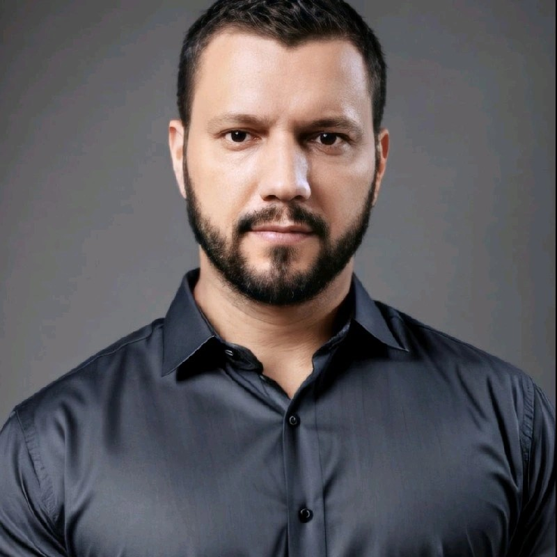

A vida pode ser redesenhada através do código.
Redesenhar a vida através do código é sobre mais do que apenas aprender a programar. É uma maneira de reinventar quem somos, encontrar novas oportunidades e até mesmo resolver problemas do dia a dia. Cada linha de código é como uma nova chance de criar algo do zero, de mudar nossa realidade. Não se trata só de tecnologia, mas de usar o conhecimento para transformar nosso caminho, explorar novas possibilidades e abrir portas que antes pareciam inacessíveis.
Se você está procurando um profissional dedicado e orientado a resultados, estou à disposição para ajudar sua empresa a crescer e superar novos desafios.
sEXPERIÊNCIA PROFISSIONAL
General Colchões
Vendedor
Vendas de colchões e acessórios, gestão de showroom, metas.
Santo Sonho Colchões
Vendedor / Gerente Comercial
Projeção de vendas, gestão de estoque, fluxo de caixa e vendas, treinamento para vendedores.
CVC Brasil
Assistente Financeiro
Conferência de invoices, gestão de comunicações e suporte a pagamentos.

QUEM SOU EU?
Olá! Eu sou Adriel da Silva Donegá, estou em uma jornada emocionante de transição para o mundo da tecnologia, depois de mais de 10 anos de atuação em vendas e gestão. Durante esse tempo, aprendi a me conectar profundamente com as necessidades dos clientes e a oferecer soluções personalizadas, sempre com foco em resultados rápidos e eficazes.
Atualmente, estou cursando Tecnólogo em Desenvolvimento Web e ampliando meus conhecimentos com cursos voltados para Programação Web FullStack. Embora eu tenha focado bastante em HTML5, CSS3 e JavaScript, meu objetivo é evoluir para me tornar um desenvolvedor fullstack no futuro. Também estou aberto a oportunidades como Suporte Técnico ou Desenvolvedor Front-end, pois sei que cada etapa me aproxima ainda mais dessa meta.
Sou autodidata, proativo e adoro resolver problemas de maneira criativa. Para mim, a programação é uma forma de transformar ideias em soluções que facilitam o dia a dia das pessoas. Além de tecnologia, sou músico e pai, e acredito que tanto a arte quanto a vida cotidiana me inspiram a ser mais criativo e resiliente.
Estou em busca de empresas inovadoras que valorizem o aprendizado contínuo e a colaboração, onde eu possa aplicar minhas habilidades e crescer junto com a equipe. Se você procura alguém com paixão por tecnologia, foco em resultados e vontade de aprender cada vez mais, estou pronto para contribuir!